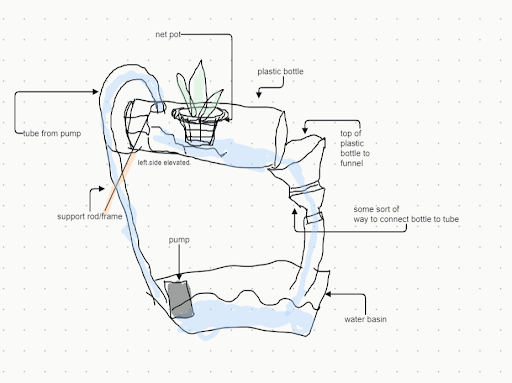
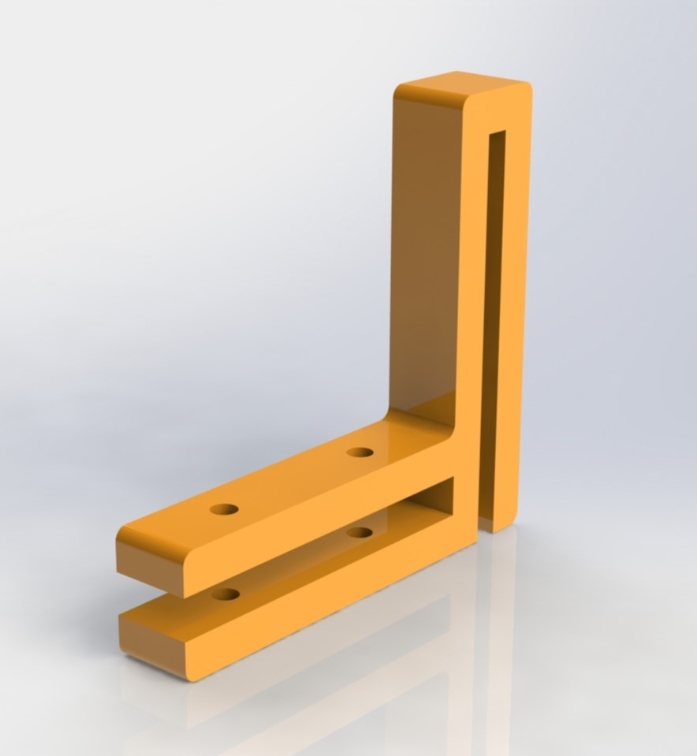

Sprint I
Sprint Overview
The goal of sprint 1 was to create a singular plant pot that uses an ESP32 microcontroller to automatically pump water and collect sensor data.
Mechanical
For our first sprint, we designed a simple single pod hydroponics system by which a pump moves water through our system. This design only has one pod, so our main goal for our next sprint was modularity.
Shown below is a rough sketch for the mechanical structure of sprint 1
Components
For the purpose of sprint 1, we wanted to focus on re-purposing and scrounging as many materials as possible, to recreate a fundamental hydroponic system as quickly as possible and to understand how we want to integrate future features and areas of challenge. Our first component is a repurposed trash can from Maricela's room, which acts as a water basin.
We then laser cut a lid for the trash can from acrylic, with two holes in it. Next, we found a small sump pump to direct the flow of the water, and attached tubing to either end of it. We fed the tubing through a recycled plastic water bottle, with one hole being cut into its lid for a water exit, and another into the topwards-facing side of the plastic bottle.
Finally, we 3D-printed attachment mounts to hang over the trash can, and laser cut a flat piece to hang in between them. We then attached a simple breadboard with wires attached to the pump to control the flow of water.

Reasons for Design
We wanted to design in a way that optimized as little space and components as possible while still implementing mechanical and electrical components, in this case our pump and canal and the electrical breadboard which would send signals back to our computer. This design is easily fabricated, and had a lot of learnings that we used in future projects, like running a canal parallel to our basin (as opposed to a vertical farm) and designing safe, stable housing for electronics.
Electrical
Description of the circuit

Software
For sprint 1, the software goal was to have a simple microcontroller code that turns the water pump on/off for a specified duration. This was achieved using the millis() function from the Arduino library. The user was able to change the duration by typing in the new duration in the Serial monitor. Also, the temperature & humidity readings from the sensor are displayed through the Serial monitor.
Sprint Reflection
Our sprint 1 design functioned as we intended. There was absolutely no leaking, and water flowed both in and out of the basin. All the electrical compartments were stable, and could control the sump pump, as well as power the sensors. The sensors in turn sent temperature and humidity readings to our laptops, which we could read in real time.